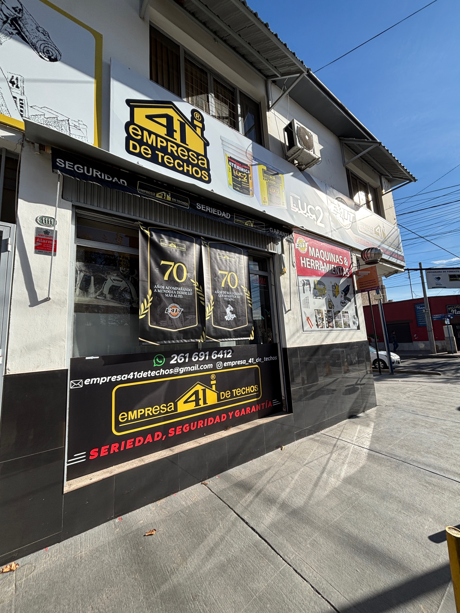
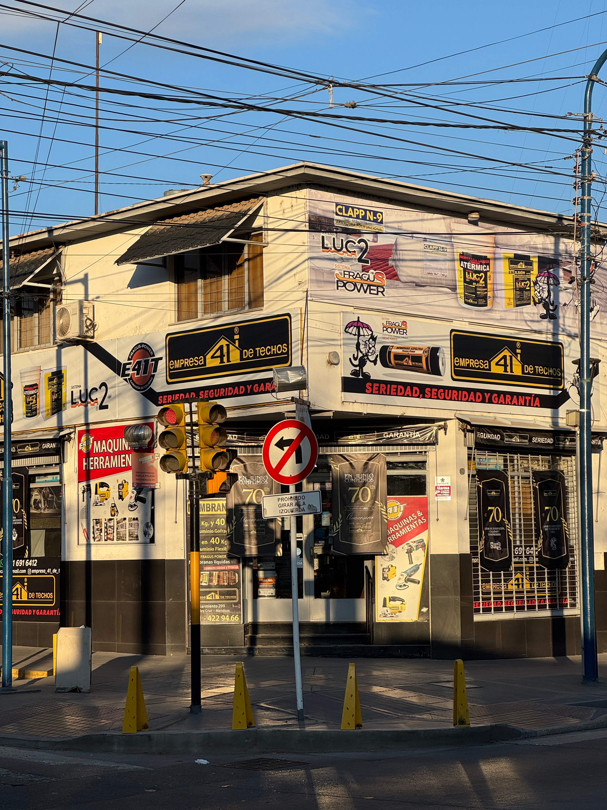

Trabajos realizados


Impermeabilización profesional · Trabajos con garantía · Personal con ART · Exclusivo Sistema LUC-2 MGT
Realizamos impermeabilizaciones definitivas utilizando materiales de primera calidad y nuestro exclusivo sistema LUC-2 MGT.
Ofrecemos soluciones para la impermeabilización y construcción de techos, garantizando seguridad, durabilidad y terminaciones de alta calidad.
Aplicación: Techos de chapa, tejas y superficies donde la membrana común no se adapta.
Membrana armada "in situ", impermeabilidad total, procedimiento en frío, transitable y resistente al granizo.
Aplicación: Todo tipo de techos
Soporta abrasión, golpes, punzado, granizo, alto tránsito peatonal y rayos UV. Compuesto con membranas geotextiles y tecnología propia.
La historia de Empresa 41 de Techos comienza en la década del 50, cuando Alfredo Garro recorría las calles con su carrito de herramientas reparando techos y brindando soluciones a las familias mendocinas.
Con el paso de los años, el pequeño emprendimiento familiar creció hasta convertirse en un referente en impermeabilización. Hoy, nuevas generaciones continúan el legado, manteniendo los mismos valores de dedicación, compromiso y excelencia.




Garantizar la seguridad y durabilidad de los techos mediante soluciones integrales y mano de obra especializada.
Ser reconocidos a nivel nacional en impermeabilización y construcción de techos, manteniendo los más altos estándares de calidad.
Venta de membranas, geotextil, asfaltos, herramientas y camping.
Consultar catálogo por WhatsAppNos comprometemos con la satisfacción total del cliente, la escucha activa, la transparencia y la mejora continua en cada servicio que brindamos.
Cumplimos con todas las normativas vigentes, promoviendo un entorno seguro, con personal capacitado y equipado correctamente.
Sarmiento 299 esq. Figueroa Alcorta, Godoy Cruz, Mendoza
Lunes a viernes de 8:30 a 16:30
WhatsApp: 2616916412
Instagram: @empresa_41_de_techos
Email: empresa41detechos@gmail.com